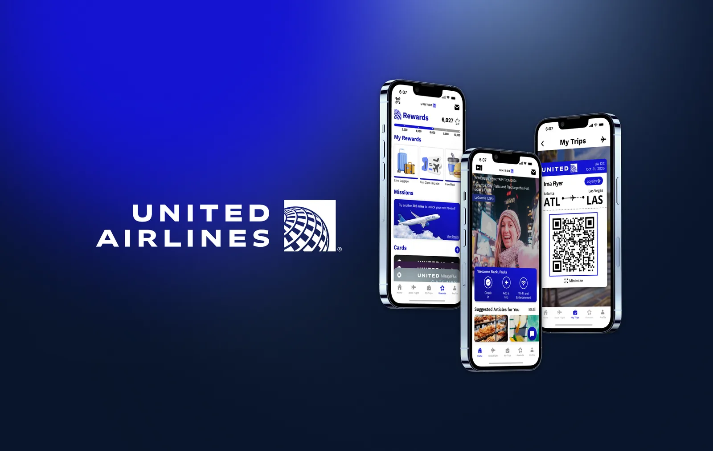

UX / Product design
United Airlines
Make rewards worth exploring.
A mobile app concept from a six-person team. I redesigned the rewards section end to end and kept the team’s screens consistent.
Independent team concept, not commissioned by United Airlines
- My role
- Team lead & rewards designer
- Team
- Sebastian, Ryan, Madison, Sara, Kristine & Angelina
- Timeline
- [add dates and duration]
- Tools
- [add design and research tools]

Overview
The problem
Our interface review and interviews pointed to crowded layouts and hard-to-find tasks. For occasional travelers, earning points rarely translated into a benefit they understood.
My goal
Make reward options easy to find and understand, while giving booking, trips and support a clear home. Success meant clearer decisions, not just more engagement.
My contribution
I owned the rewards redesign and reviewed teammates’ screens for consistency. Booking, boarding, trip management and support were team work.
Process
The observations, decisions and open questions behind the concept.
-
Research
Look for friction around real travel tasks.
We combined interface and competitive reviews with interviews, affinity mapping, personas and journey maps. Rewards emerged as a comprehension problem: travelers needed to see what their points could mean for their next trip.
[add interview sample, recruitment criteria and one traceable finding]
-
Direction
Give each task a predictable home.
The proposed architecture separates Home, Bookings, My Trips, Rewards and Profile. Giving rewards its own destination makes room to explain benefits without crowding the day-of-travel experience.
-
My design
Put potential value beside the balance.
I rebuilt rewards around the points balance, reward options, missions and cards. The detail concept adds proposed upgrade and gifting actions; eligibility, pricing and benefits are concept content that would need business validation.
-
Iteration & testing
Test comprehension before adding complexity.
The concepts haven’t been usability-tested yet. A next study would ask travelers to explain an available benefit, spot its restrictions and find a way to redeem it. Missions stay only if they help rather than distract.
[add a documented before-and-after iteration and the feedback behind it]
Final design
The team concept covers booking, trips, boarding, rewards and support. My rewards screens put what points can do right next to the balance.
Screen 1 of 3
Show the next useful action
Pair the balance with options, so points aren’t the end of the journey.
Keep team screens coherent
Review hierarchy and visual consistency across the whole concept.
Outcome & reflection
What was delivered
Research synthesis, a revised architecture and mobile concepts. No launch, usability improvement or retention increase is claimed.
What comes next
Test reward eligibility and redemption comprehension with frequent and occasional travelers, then use the errors we observe to refine the hierarchy.
Project context & draft notes
United Airlines team presentation; Sebastian’s confirmed ownership of the entire rewards redesign and team design consistency.
Bracketed prompts identify information still to confirm. Labeled visual spaces reserve the intended image proportions; original project assets remain saved.